This function produces a two-dimensional scatter plot of data points
and colors the data points according to a supplied clustering. Noise points
are marked as x. hullplot() also adds convex hulls to clusters.
Usage
hullplot(
x,
cl,
col = NULL,
pch = NULL,
cex = 0.5,
hull_lwd = 1,
hull_lty = 1,
solid = TRUE,
alpha = 0.2,
main = "Convex Cluster Hulls",
...
)
clplot(x, cl, col = NULL, pch = NULL, cex = 0.5, main = "Cluster Plot", ...)Arguments
- x
a data matrix. If more than 2 columns are provided, then the data is plotted using the first two principal components.
- cl
a clustering. Either a numeric cluster assignment vector or a clustering object (a list with an element named
cluster).- col
colors used for clusters. Defaults to the standard palette. The first color (default is black) is used for noise/unassigned points (cluster id 0).
- pch
a vector of plotting characters. By default
ois used for points andxfor noise points.- cex
expansion factor for symbols.
- hull_lwd, hull_lty
line width and line type used for the convex hull.
- solid, alpha
draw filled polygons instead of just lines for the convex hulls? alpha controls the level of alpha shading.
- main
main title.
- ...
additional arguments passed on to plot.
Examples
set.seed(2)
n <- 400
x <- cbind(
x = runif(4, 0, 1) + rnorm(n, sd = 0.1),
y = runif(4, 0, 1) + rnorm(n, sd = 0.1)
)
cl <- rep(1:4, times = 100)
### original data with true clustering
clplot(x, cl, main = "True clusters")
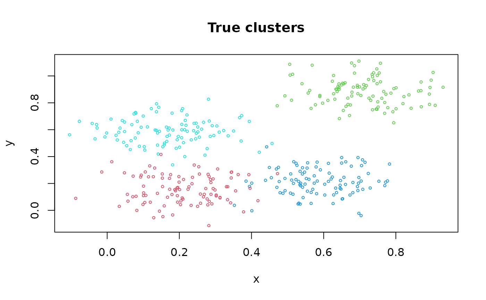
hullplot(x, cl, main = "True clusters")
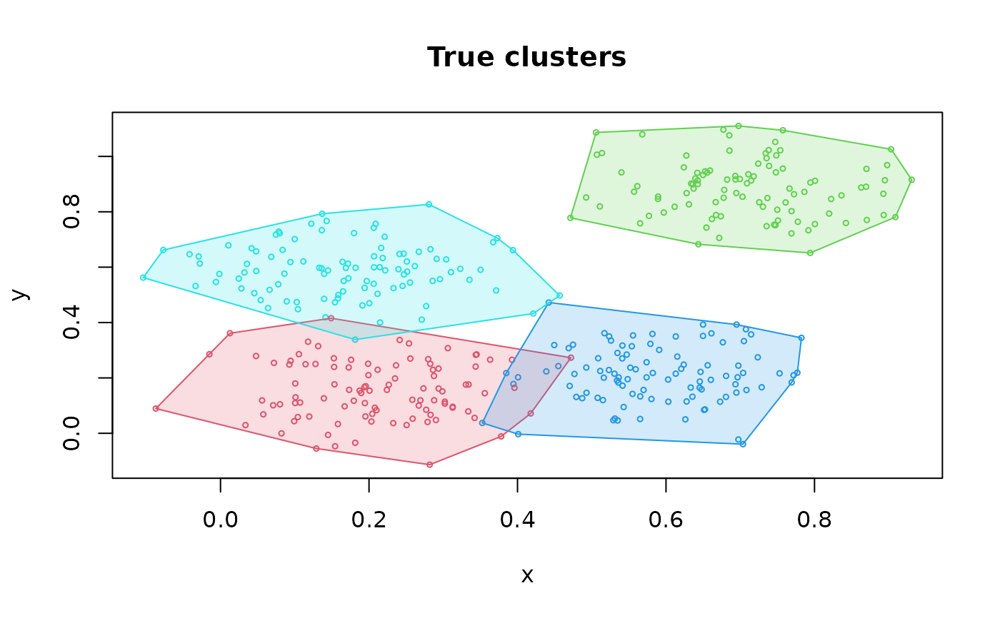
### use different symbols
hullplot(x, cl, main = "True clusters", pch = cl)
### just the hulls
hullplot(x, cl, main = "True clusters", pch = NA)
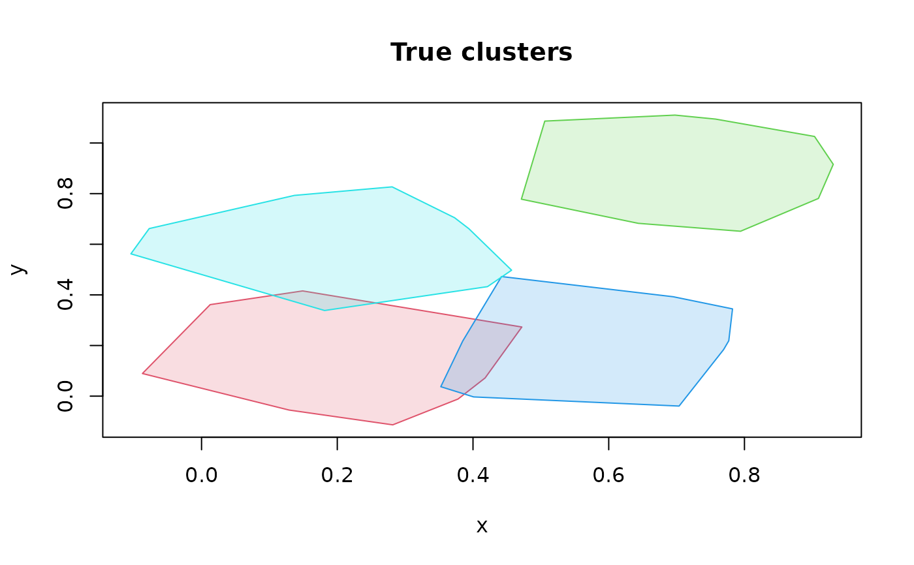
### a version suitable for b/w printing)
hullplot(x, cl, main = "True clusters", solid = FALSE,
col = c("grey", "black"), pch = cl)
#> Warning: Not enough colors. Some colors will be reused.
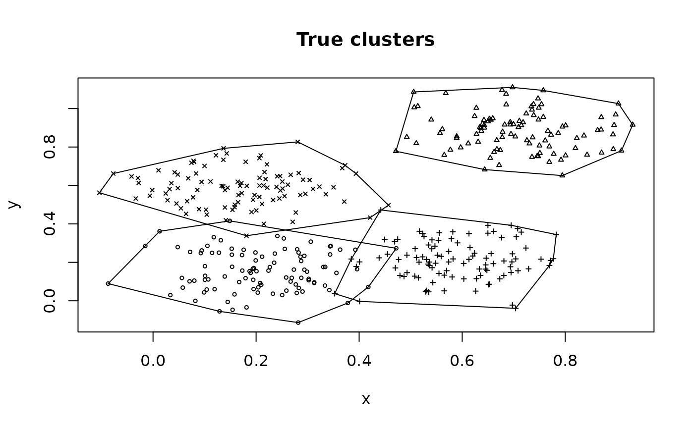
### run some clustering algorithms and plot the results
db <- dbscan(x, eps = .07, minPts = 10)
clplot(x, db, main = "DBSCAN")
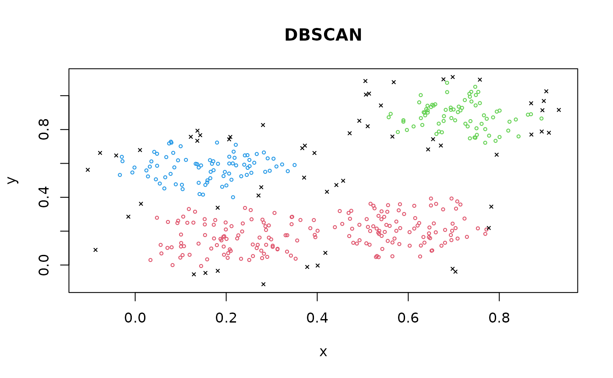
hullplot(x, db, main = "DBSCAN")
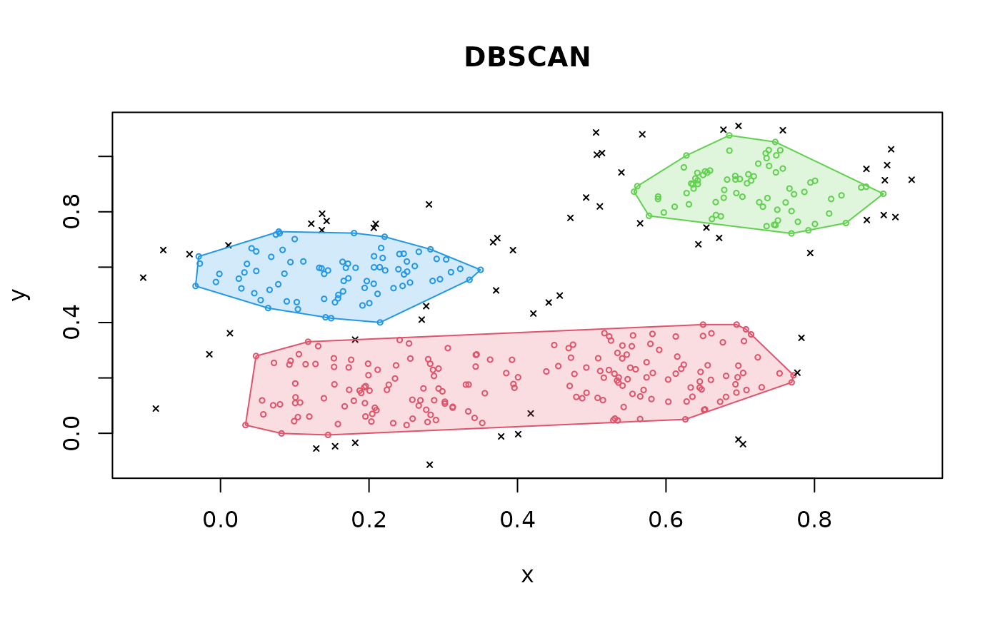
op <- optics(x, eps = 10, minPts = 10)
opDBSCAN <- extractDBSCAN(op, eps_cl = .07)
hullplot(x, opDBSCAN, main = "OPTICS")
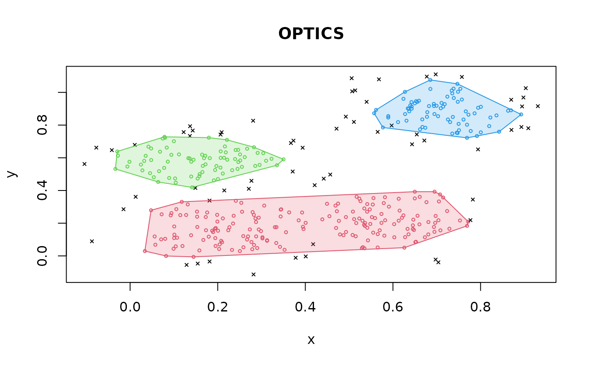
opXi <- extractXi(op, xi = 0.05)
hullplot(x, opXi, main = "OPTICSXi")
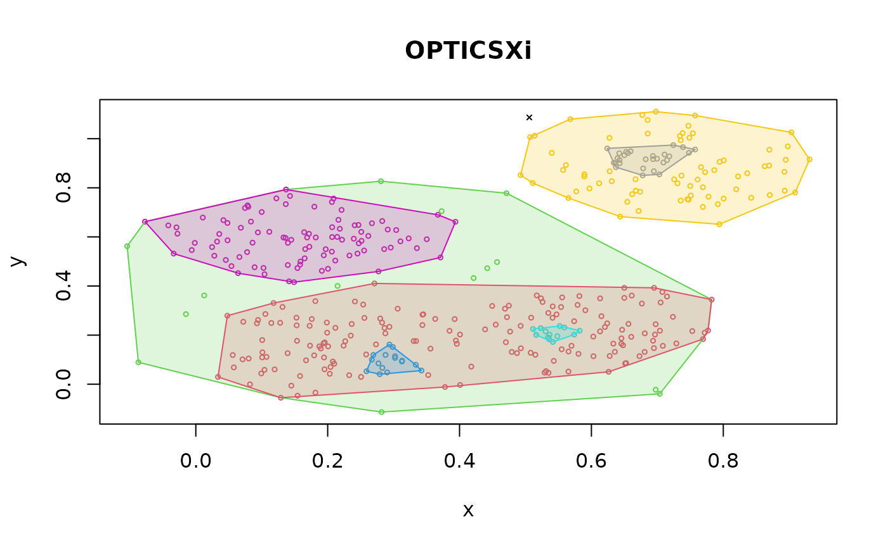
# Extract minimal 'flat' clusters only
opXi <- extractXi(op, xi = 0.05, minimum = TRUE)
hullplot(x, opXi, main = "OPTICSXi")
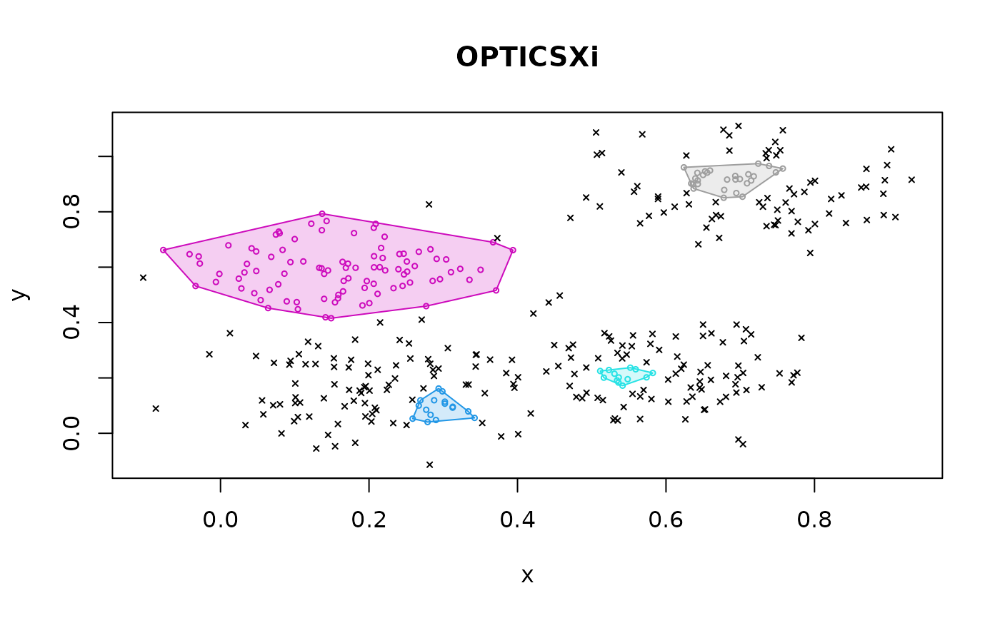
km <- kmeans(x, centers = 4)
hullplot(x, km, main = "k-means")
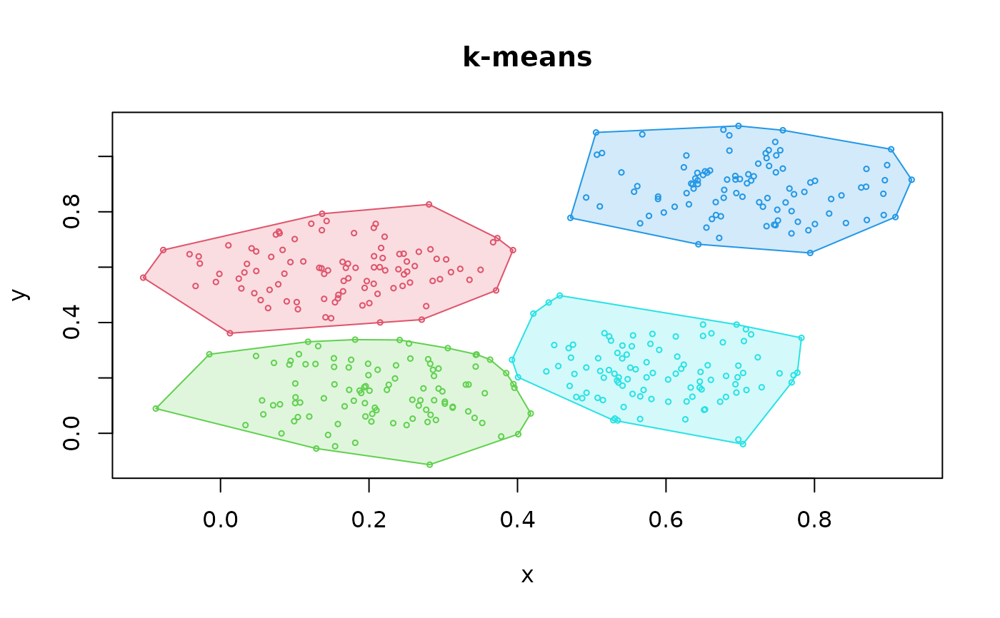
hc <- cutree(hclust(dist(x)), k = 4)
hullplot(x, hc, main = "Hierarchical Clustering")
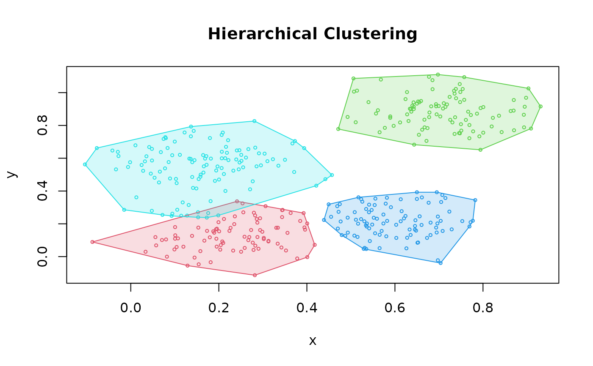